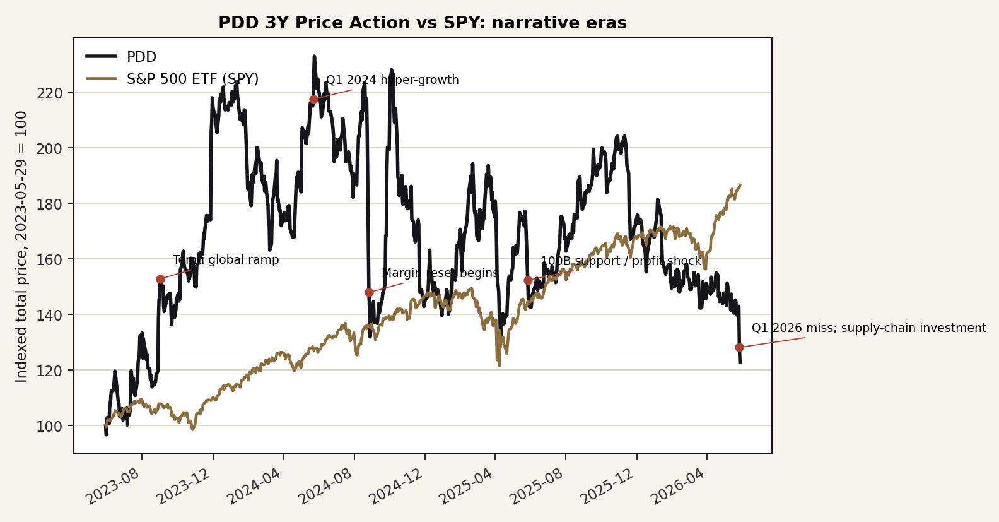
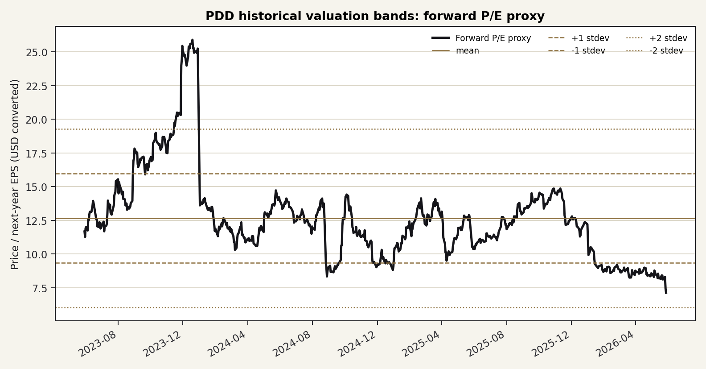
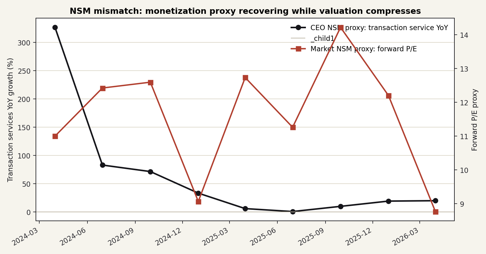

Ticker: PDD
Date: 2026-05-29
Classification: Advance to next-stage research, with unit-economics gating
结论：PDD 值得进入下一阶段研究，但不是因为“便宜”本身，而是因为市场可能正在用错误的短期锚定给一个正在换经济制度的资产定价。 2026 年 5 月 27 日 Q1 业绩后，股价跌到 52 周低位附近；市场惩罚的是营销服务增速放缓、EPS miss、Temu 关税和合规压力，以及供应链/自营品牌投入可能让利润率继续波动。但与此同时，交易服务收入仍同比增长约 20%，集团仍有约 RMB4361 亿现金和短投，且 FY2025 仍产生约 RMB1069 亿经营现金流。
这不是一个干净的“质量复利”故事。PDD 的核心问题是：国内主站广告变现是否进入成熟/内卷期，而 Temu 是否必须从轻资产跨境撮合转向更重的本地仓、合规、供应链和自营品牌模式。如果这些投入只是为了维持补贴驱动的低质增长，股票是价值陷阱；如果它们把 PDD 从流量分发平台推向供应链组织者，当前约 7-8x forward P/E、约 US$62B 净现金的定价可能过度惩罚了过渡期利润。
| Source Category | Latest Source Date | Freshness Status | Age vs. Report Date |
|---|---|---|---|
| Sell-side reports | 2026-05-28 | Current | 约 1 天；覆盖 Q1 2026 后高盛等更新 |
| Earnings call transcript | 2026-05-27 Q1 2026；本地库完整导出至 FY2025 Q4 | Mostly current | 约 2 天；Q1 用公开转录/公告补齐 |
| SEC filings | 2026-04-29 Form 20-F for FY2025 | Current | 约 1 个月 |
| Buy-side reports | 2026-03-04 经营者访谈；2025-12 FundaAI 研究 | Useful but incomplete | 约 3 个月；未找到系统性 hedge fund memo |
| Item | Latest Situation |
|---|---|
| Market Data & Positioning | 2026-05-28 美股收盘价 US$83.03；52 周区间约 US$81.56-139.41；市值约 US$118.2B，企业价值约 US$54.5B。现金和短投约 RMB436.1B，折合约 US$63.2B，净现金约 US$62.5B。 |
| Key Financial Metrics | Q1 2026 收入 RMB106.2B，同比 +11%；交易服务 RMB56.3B，同比 +20%；在线营销 RMB49.9B，同比约 +2%；经营利润 RMB19.6B，同比 +22%；non-GAAP 净利润 RMB14.1B，同比 -17%。FY2025 收入 RMB431.8B，同比 +9.7%，经营现金流 RMB106.9B。 |
| Price Action & Technicals | 价格跌破 50 日均线 US$99 和 200 日均线 US$113；近 1 周约 -10.7%，YTD 约 -26.8%。30 日技术指标显示 RSI 约 29、MACD 在财报后转弱，短线是超卖状态，但还没有趋势反转确认。 |
| Positioning | Insider ownership 约 32%，机构持股约 30%；空头约 28.4M 股、约 3.7% outstanding，days-to-cover 约 4.6。不是典型高空头 squeeze 结构，更多是基本面锚定重估问题。 |
| Key Metric | Value | Implication |
|---|---|---|
| Transaction services growth | +20% YoY | 最接近 Temu/跨境 GMV 与平台交易规模的公开 proxy，仍强于广告业务。 |
| Online marketing growth | 约 +2% YoY | 市场担心国内主站广告 ROI 和商家投放意愿进入成熟/竞争压力期。 |
| Net cash per share | 约 US$43.9 | 现金占股价和市值比例高，是估值安全垫，也是资本配置争议点。 |
| FCF yield | 约 13% | 若现金流韧性保持，当前折价隐含市场对 Temu 投入和监管风险给了很重惩罚。 |
Pricing Anchor & Embedded Expectations: 市场当前主要锚在 FY26/FY27 EPS、在线营销增速、Temu 单位经济和供应链投入周期。卖方更常用 SOTP + 现金：国内核心电商给 10-12x FY26E P/E，Temu 用 1.5x FY26F P/S 或 GMV→利润率→倍数法，现金部分有机构打折。当前股价约对应 7-8x forward P/E、EV/FCF 约 3-4x，基本隐含：Temu 长期价值被大幅折价，且国内广告变现不会很快恢复。
Sell-side ruler: 高盛 Q1 2026 后 TP US$145、MS TP US$148、野村 TP US$136、Bernstein PT US$132、Jefferies PT US$146、UBS SOTP 表内 PT US$198。核心差异不是目标价数字，而是 Temu 是否应被当作亏损负债、还是有独立平台期权价值。
| Company | Market Cap | Forward P/E | Trailing P/E | Revenue Growth | Net Margin / FCF |
|---|---|---|---|---|---|
| PDD | US$118B | 约 7-8x | 约 9x | Q1 +11% | 净利率约 22%；FCF yield 约 13% |
| BABA | US$303B | 约 14x | 约 19x | 约 +3% | 净利率约 10% |
| JD | US$39B | 约 7x | 约 21x | 约 +5% | 净利率约 1% |
| MELI | US$86B | 约 29x | 约 45x | 约 +49% | 净利率约 6% |
Historical Context & Charts: 三张图表均已保存至 outputs/assets/。估值图使用公开每股收益/一致预期构建 forward P/E proxy；NSM 图使用交易服务收入增速作为 CEO NSM proxy，因为 PDD 不披露 GMV、活跃买家、Temu cohort 或留存。



NSM Framework:
| Lens | Assessment |
|---|---|
| CEO NSM | 供应链创造的“可售低价好货 + 确定履约 + 商家经营效率”。公开 proxy 是交易服务收入增速、远端物流/产业带项目覆盖、商家成本下降后的复投。 |
| Long-term investor NSM | 可持续现金利润：Temu LTV/CAC、补贴/广告强度、履约和退货成本、国内广告 take rate，以及集团 FCF 在重投入期是否仍能保持。 |
| Market-consensus NSM | 在线营销服务增速、季度 EPS/利润率、Temu 亏损和关税/合规成本。市场目前更惩罚“利润表噪音”和广告放缓。 |
| Mismatch category | Healthy lag with narrative-trap risk. 如果供应链投入正在把 Temu 和主站变成更深的商家基础设施，市场的利润率锚太短；如果增长靠补贴维持、留存和单位经济不能改善，则这是叙事陷阱。 |
Value Creation To Value Capture Chain:
更低全链路成本 / 更确定履约 / 更丰富低价供给 → 消费者复购与商家留存 → 商家把省下的费用投入新品、质量和投放 → 平台从交易服务与广告工具捕获价值 → 规模化现金流与更强议价能力
Upside/Downside Asymmetry: 上行来自两个通道：一是 EPS 预期修复，二是 P/E 从当前约 7-8x 回到中国互联网中位数或核心业务 10-12x 的卖方 SOTP 框架。下行则不是“估值再便宜一点”，而是 Temu 变重后现金回报率下降、国内广告增长停滞、监管成本永久侵蚀低价优势。
Classification: Advance to next-stage research, with unit-economics gating.
Wrong anchor: 有可信错误锚定。市场在用在线营销增速和季度 EPS 给 PDD 定价，但公司真实转型点可能是供应链/交易服务经济性是否能形成长期价值捕获。Q1 2026 的错配很典型：交易服务 +20%，但营销服务仅约 +2% 和 EPS miss 主导股价。
Material upside: 存在足够大上行。当前 US$83 附近对比 S&P Global 35 位分析师平均目标价约 US$124，以及多家卖方 US$132-148 的中枢，隐含约 50% 左右的一年期重估空间。更重要的是，现金占市值比例高，使 ex-cash 的核心业务估值非常低。
Clear validation path: 有可证伪路径，但需要下一阶段补充 Temu cohort 和商家 channel checks。未来 2-4 个季度如果交易服务保持强增长、在线营销企稳、现金流不被供应链投入吞噬，wrong-anchor case 会增强；反之，若投入只带来更低利润率而无留存/履约改善，应降级为价值陷阱观察。
Confirming datapoints
Breaking datapoints